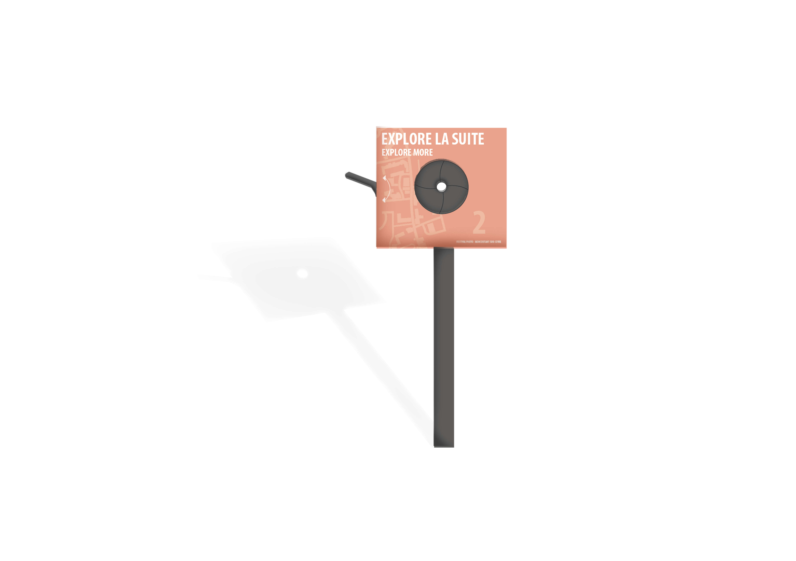
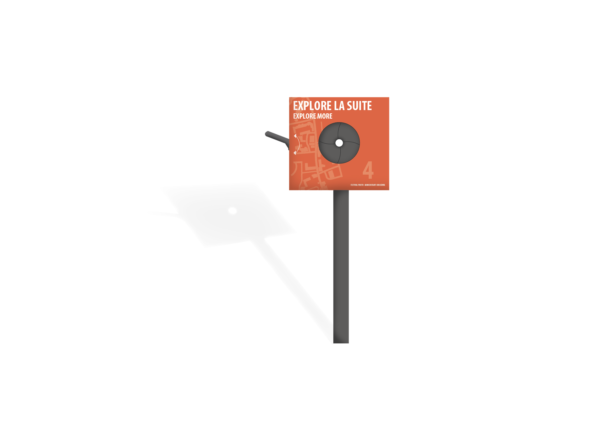

Signalétique — Festival Photo
Dispositif de signalétique pour le festival photo 2023 de Moncoutant-Sur-Sèvre. Un événement en plein air d’une durée de 3 mois dispersé dans 4 zones de la ville.
La signalétique se compose d’un trio de modules : Les diaphragmes, le parcours et l’anamorphose. Ils répondent au besoin des visiteurs d’être indiqué sur le parcours à suivre lors de la visite de ce festival photographique.
Conception d'un dépliant analytique concernant le lieu d'exposition.